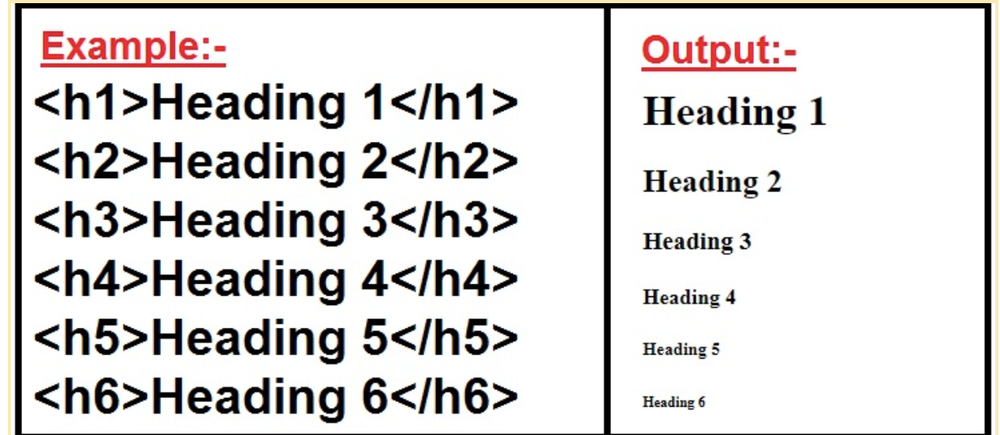
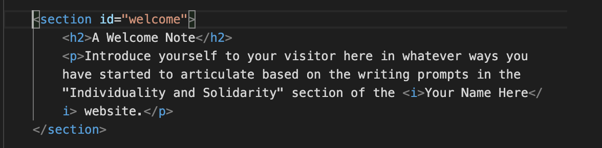

In this section you will be downloading a zip file containing two template documents. Our tutorial will guide you through understanding what these two documents are, the purposes the serve, and how they work in tandem to form the backbone of your personal portfolio site. Take a moment now to download the file brackets.zip. We suggest you save it in your home directory or your documents folder. This will be your starter kit and you will edit it through Visual Studio Code.
In the sections that follow, you will begin the process of building your own personal website. You will be using the documents from your starter kit to begin your journey of crafting your personal website. The operative word here is journey. Please work at your own pace and feel free to grow your website at whatever pace it takes for you to learn the technical skill we will teach you here. Most importantly, remember that this is also a space to have fun, to tinker, to learn through trial and error, and to embrace mistakes as a learning opportunity.
Websites are made of individual web pages and pages are stored in files, just like the files that live on your computer. The content of pages exist on your computer under the file extension, .html. A file extension is a standard way to indicate what kind of information a file contains so it can use the right software to read and write them. You are likely familiar with .doc or .pdf files. In these cases, your computer probably displays the information in Microsoft Word and Adobe Acrobat or Preview for Mac users, respectively. In the case of .html, these files will open on your default web browser. This is Google Chrome for us, but might also be Firefox, Safari, or Edge for you. In the example you see below, the column on the left is called a code block. It is what the html template in your starter pack looks like and what your webpage looks like "under the hood". The column on the right is what that file looks like when opened on your default browser, a simple webpage. Simply put, an .html file contains the basic text and structure of your website. The .html files are often named by standard conventions. The most common name used for the default or home page of a website is "index.html". This is one of the files included in your starter pack.
See the Pen index.html Example by shushine (@shushine-the-typescripter) on CodePen.
Websites are made of individual web pages and pages are stored in files, just like the files that live on your computer. The content of pages exist on your computer under the file extension, .html. A file extension is a standard way to indicate what kind of information a file contains so it can use the right software to read and write them. You are likely familiar with .doc or .pdf files. In these cases, your computer probably displays the information in Microsoft Word and Adobe Acrobat or Preview for Mac users, respectively. In the case of .html, these files will open on your default web browser. This is Google Chrome for us, but might also be Firefox, Safari, or Edge for you. Simply put, an .html file contains the basic text and structure of your website. The .html files are often named by standard conventions. The most common name used for the default or home page of a website is "index.html". This is one of the files included in your starter pack.
The second file included in your starter pack is a style.css file. CSS stands for "Cascading Style Sheet" and this type of file is used to “style” the contents of an associated webpage. This .css file works in tandem with the content contained in an .html file to describe the presentation of that content. Think of your HTML document as laying out the text and structure of your page while CSS describes how that text is interpreted by the audience’s senses. Presentation encompasses how a page in a web browser or assistive technologies like screen readers should interpret the text. It is where you will define, among other things, the font and background color of your website, how the text is laid out, and how emphasis is emphasized. The standard naming convention for a Cascading Style Sheet is style.css.
Before we talk about specific HTML code, a quick primer on how to read HTML will be useful. HTML makes use of what are called elements, tags, and attributes.
This Mozilla developer webpage is a great primer on HTML, if you would like to explore further.
It can often be fun, gratifying, and helpful to be able to see the code you write update your webpage in real time. You can keep a track of the changes to your webpage and see how your code functions by opening the index.html file in your web browser. In order to do this, either double-click on index.html in Finder/File Explorer or type the following command in the terminal: open[space]index.html
This is boilerplate code which comes at the top of your HTML file. Information and code included here works behind the scenes of your webpage. There are many templates for this boilerplate code which you could copy and paste as is; for example, you could use the code included in the template we have provided you and just change the text enclosed within the “title” tags to reflect your website name. Another possible template you might choose to use is the one given on this website. Most of this code is pretty routine, and if you are interested in a more detailed explanation of the function of each attribute and tag used here, refer to this page.
One note on the fourth line of code: that line of code references the CSS file you will be creating and which will work in conjunction with the HTML file to finally create your webpage. The text included in quotation marks after href (“style.css”) is the name of the CSS file. While you can name your CSS file however you choose, style.css is most conventional. Basically, CSS stands for "Cascading Style Sheet." Coding with CSS will help style the content in your HTML document. CSS describes how the elements in your HTML document should be displayed, and helps specify elements of the web page such as typography, color, and sizing. Think of your HTML document as laying out the basic bones of your web page while CSS gives it its distinct appearance and look.
Consider these two memes which we think capture how CSS works with HTML to give your webpage its look and appearance.
<header></header>: Information included within the header tag forms the introductory content for your webpage or can include navigational links to other parts of your website. For example, here, within the header tags, we are specifying the “banner” for our webpage (hence, role=“banner”). In other words, we are specifying the title of our webpage which will be visible at the top to any visitor who comes to the page.
<h1></h1>: These are heading tags. Headings range from <h1> to <h6>, with <h1> being the most important and <h6> being the least. As this Mozilla page helpfully explains, think of these tags as defining headings and subheadings, such that <h1> gives the title of the book, with subsequent heading tags defining chapter titles, section titles, sub-section names, so on and so forth. Generally, a web page will make use of only one <h1> tag but could use multiple <h2>, <h3>, etc. tags depending on the organization of information and sections on the page.
This image might help understand this better:
<main></main>: Content enclosed within the main tags refers to the main content of the webpage; think of it as the body of the document. This content can then be subdivided into sections as we have done in the template provided.
We have chosen to call this section “A Welcome Note.” On most personal portfolio websites, this would be akin to a "landing" or an "about me" page where you might choose to introduce yourself to visitors who stop by your website. You do not have to define yourself solely, initially, or primarily in terms of your institutional affiliations and academic achievement. Do with this description as you will. Perhaps you might take inspiration from the writing prompts we’ve shared in the “Individuality and Solidarity” section of the Your Name Here website.
Another function of this section (or you could make a separate section) is to welcome visitors in a way that readies or positions them to receive the content you’ve laid out on your page. Here, we take inspiration from Angela Balduzs’s beautiful webpage which opens with a short letter to her visitors.
Now let’s talk about some of the technical things happening in this section. Refer to the screenshot below as you read the following.
This probably feels like a lot of complicated code, especially for those of us who are first time coders. Worry not, though–we’re going to break it down for you. Before we do that, though, let us talk a little bit about this particular section and why we chose to include it here.
As we have been saying repeatedly, the academic space expects us to perform and portray a particular self–that of the consummate professional and intellectual. And the personal portfolio website is often made to function in service of this task, functioning like a professional calling card extolling your professional self and achievements. However, who says that your personal website can/should only include a professional mugshot on the home page, your institutional affiliations, your published works, and your CV? This particular section – “My Surrounds” – invites you to bring to the fore things–books, movies, recipes, songs, images–which have been sparking joy for you, things which have been thought provoking, interesting, enticing, fun – literally anything you have been engaging with and want to share. After all, these are just as interesting and formative a part of you as your more scholarly pursuits.
Now, on to understanding the code. We have already spoken about the section and heading tags. Some of the new tags we have introduced here include the following:
<a href></a>: This tag is used to embed links; here, we have linked to a YouTube video of a Syrian Harissa recipe. The URL of the link you want to embed is included within quotation marks after the “=” sign following “href.” The text you would like to hyperlink (here, “Syrian Harissa (Basbousa) Recipe) comes in between the opening and closing tag.
A good practice to keep in mind is not to use text such as “click here” which you then hyperlink; descriptive text is better. Text like “click here” is generally bad from the perspective of accessibility and is not parsable for those who use screen readers.
Our first time using .html/ CSS was just 6 short months ago. Although tags like italics (<i>letter/ word you want in italics</i>) are as simple as you will find within this language, we are still memorizing the basics. Fear not, these skills will come with time. Whether it takes 6 months, or 6 years, you’re moving in the right direction. For us, we also learned the basics from a template just like this.
Throughout the process of creating this project and looking at other academic and personal websites, the individuals that freely shared helpful information is what really resonated with us. Although concepts like open access, collaboration and support are often embraced within digital humanities, those sentiments are more rare within academia. This section — “Collaboration & Support” — is encouraging you to embrace this community spirit by openly sharing things like successful scholarship applications, or even a class syllabus.
Keep in mind, using this header (“Collaboration & Support”) is completely optional. You might find that something more traditional and straightforward like — Successful Scholarship Applications — better suit your needs, you might invent something else up, or you may skip this section entirely. Whatever the case, you can walk away from this section confidently understanding emphasis tags.
Now, on to understanding the code. We have already spoken about the section and heading tags. In this section, we will breakdown emphasis tags, which include: bold, italics and underline: